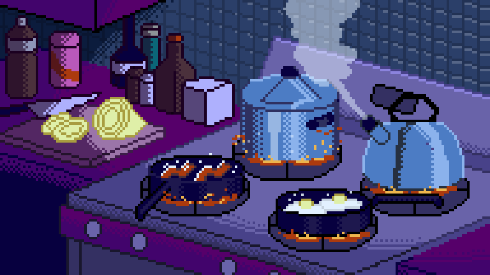

<div class="mission">
  
    <div class="container">
        
        <div class="text3">
            <div class="details"><br>Selon vous, couvrir vos casseroles lorsque vous <br><br>
                y faîtes cuire quelque chose, permet-il de réduire la consommation <br><br>d'énergie ?
            </div>
        </div>
        <div class="answers answers2">
            <a>
                <p class="answer one" (click)="reward(5, 5)">Oui</p>
            </a>
            <a>
                <p class="answer two" (click)="reward(0, -5)">Non</p>
            </a>
        </div>
    </div>
    <div class="modal" id="modal">
        <div class="box">
            <div class="text">
                <h1>Information</h1>
                Oui, couvrir vos casseroles lorsque vous y faîtes cuire quelque chose<br>
                permet d'accélerer la cuisson et d'ainsi consommer moins.
            </div>
            <a [routerLink]="['/missionEight']" routerLinkActive="active" >
                <p class="btn-next">Suivant</p>
            </a>
        </div>
    </div>
</div>
